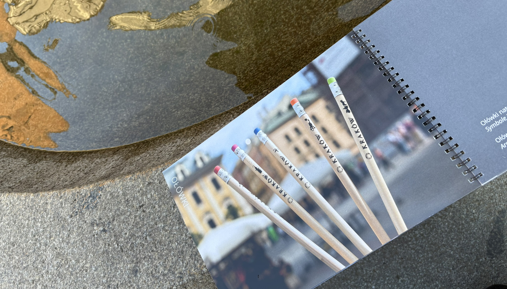
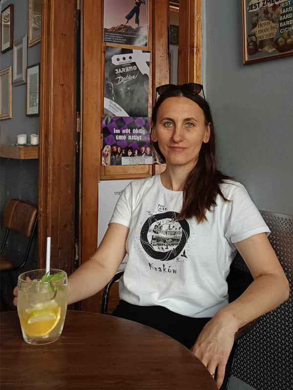
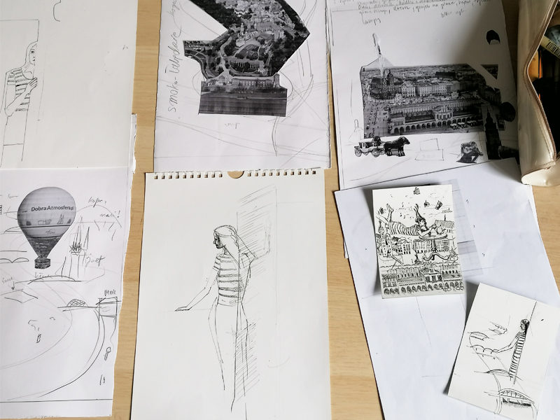
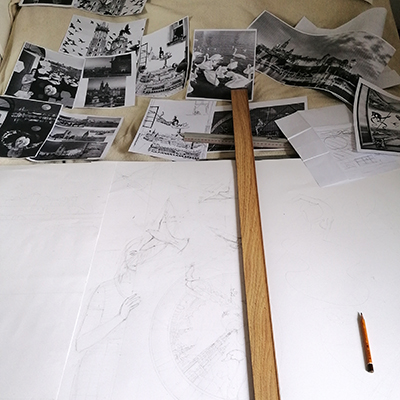
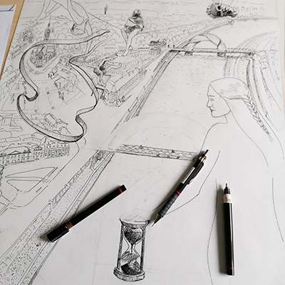

Rysuję Kraków tak, jak go czuję — nieśpiesznie, z miłością do detalu, z respektem dla miejsca.

Nazywam się Anna Milcarz (@art_mil_an). Jestem ilustratorką, projektantką graficzną i krakowianką z wyboru serca. Fascynują mnie miejsca, które na co dzień mijam, stare miejskie legendy, detale architektury oraz historie ukryte w przestrzeni miasta.
Od lat spaceruję po tym samym mieście, ale wciąż odkrywam je na nowo — w detalach kamienic, starych legendach, miejskich symbolach i z kontaktu z turystami w mojej pracy. To, co dla mnie jest oczywiste, staje się zaskakująco nowe dla zagranicznego gościa, który patrzy świeżym okiem na to, co go otacza w podróży po Krakowie. To właśnie z tych obserwacji, rozmów i spacerów rodzą się moje rysunki.
Moim podstawowym narzędziem pracy jest piórko i tusz. Lubię tradycyjny warsztat, ponieważ wymaga cierpliwości, uważności i pozostawia ślad ludzkiej ręki.
Hejże Kraków powstało z potrzeby tworzenia pamiątek, które są czymś więcej niż zwykłym souvenirem. Chcę opowiadać o Krakowie poprzez autorską ilustrację i tworzyć przedmioty, które zachowują pamięć o mieście, jego historii i wyjątkowej atmosferze. Każdy produkt nosi w sobie fragment tej opowieści — pozwalając zabrać ze sobą kawałek Krakowa.
"Tusz na papierze nie kłamie. Każdy błąd zostaje — i każdy błąd jest częścią historii."

Anna Milcarz / fot. [tu wstaw fotografa]
Kierunek projektowanie. Dyplom z wyróżnieniem. Tutaj nauczyłam się, że forma służy treści — i że najprostsze narzędzie często daje najgłębszy efekt.
Moje ilustracje można znaleźć w sklepie Hello Handmade w samym centrum Krakowa. Kubki, torby, pocztówki — wszystkie z oryginalnymi rysunkami tuszem. Sklep skupia się na polskich twórcach i krakowskim rzemiośle.
Pracuję z dziećmi, młodzieżą i dorosłymi. Wierzę, że każdy potrafi rysować — potrzebuje tylko odwagi, żeby zacząć i nie wycierać gumką zbyt często.
Przyjmuję zlecenia na ilustracje autorskie: portrety miejsc, ilustracje do wydawnictw, identyfikacje wizualne dla małych marek. Jeśli masz pomysł — napisz, chętnie porozmawiam.
Zaczynam od spaceru. Kończę na papierze o północy, z plamą tuszu na palcach i gotową ilustracją przed sobą.



Moja pracownia to małe podziemne pomieszczenie z niewielkim oknem i stosami szkiców, narzędzi i materiałów — każdy stół do innego zadania. Na biurku, przy którym rysuję, zawsze stoi pełno słoików z tuszem, najlepiej czarnym, który schnie szybko, aby podczas szrafowania kreska się nie rozmazała. Moja ręka dodaje kolejne kreski, tworząc głębię i delikatną siateczkę — jest najlepiej, kiedy już ich nie widzę, a jedynie opowiadam historię, która sama się pisze.
Używam stalówek — wystarczają mi te najcieńsze. Najlepiej lubię papier kredowy, gładki i śliski, po którym stalówka bez oporu sunie, wypełniając kolejne białe przestrzenie szkicu. Lubię tradycyjny warsztat, ponieważ wymaga cierpliwości, uważności i pozostawia ślad ludzkiej ręki.
Ilustracja to nie jest odwzorowywanie architektury. To szukanie charakteru miejsca — tego, co sprawia, że każda kreska ma swoją historię, a historia ta prowadzi do Krakowa.